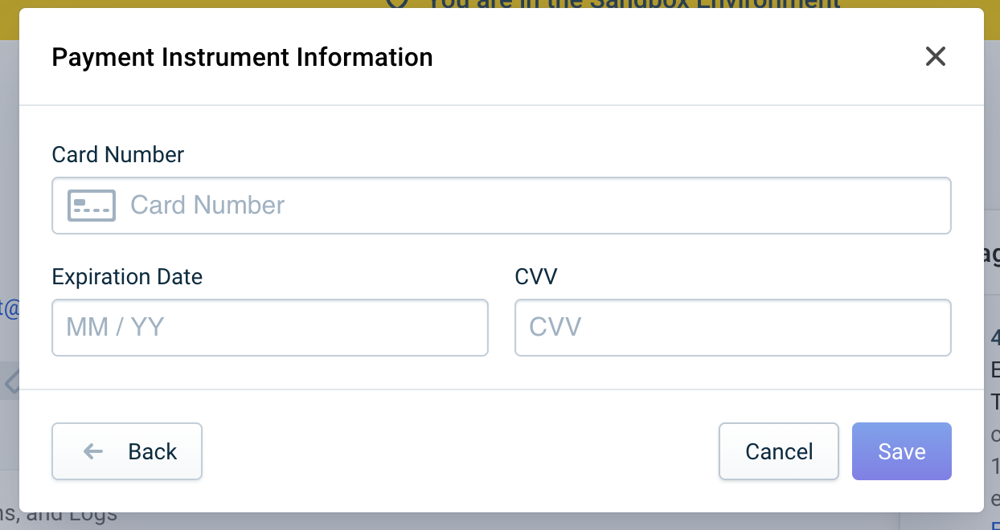

<section class="slide s-checkout-form-example-0">
    
    <span class="blur-bg"></span>
</section>

<style>
    .s-checkout-form-example-0 .blur-bg {
        display: block;
        position: absolute;
        top: 0;
        right: 0;
        bottom: 0;
        left: 0;
        width: 100%;
        height: 100%;
        background-image: url("../pictures/add-card-1.png");
        filter: blur(8px);
        -webkit-filter: blur(8px);
        background-position: center;
        background-repeat: no-repeat;
        background-size: cover;
        z-index: -3;
    }
</style>

